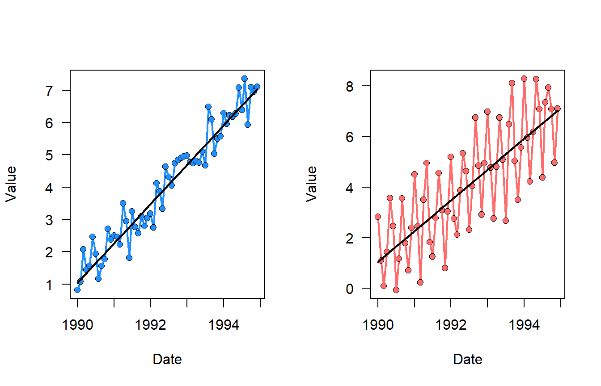
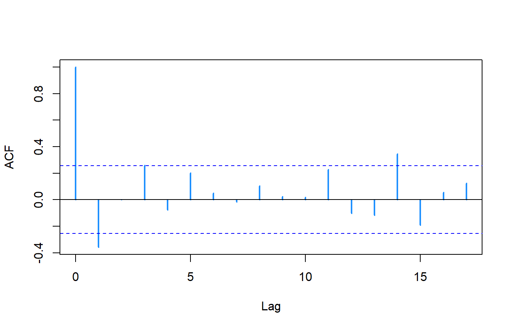

Time series Analysis (Part III), Welcome to the Kendall Family?
blog
time series
trend
So far we’ve gone over the basics of time series (Part I), minimum number of samples, power analyses and some basic trend analyses (Part II). In this post we will talk more explicitly about the Kendall family of trend test, more specifically seasonal trends.
Trend Tests
In the last two posts I introduce the Kendall trend test. In those posts, I used the cor.test(..., method="kendall") function in stat (i.e. base) R. There are several different R-packages dedicated to trend analyses such as Kendall, trend, wq and EnvStats. This is by no means an exhaustive list and I’m sure there are other package on CRAN, GitHub or other platforms that do trend analyses. In my years of being a data analyst, specific to trend analyses these packages (and other platforms) were compared to the USGS Computer program for the Kendall family of trend test but more on that later.
Kendall Trend Test
While this might come down to semantics but across the literature you’ll seen Mann-Kendall (trend) test and Kendall trend test, test or rank correlation test. Overall these tests are one in the same, its partly in how they are applied (to some degree). For instance the Mann-Kendall test specifically used to detect monotonic trend in a time series while Kendall tests whether two variables are related in a monotonic way, irrespective of temporal structure. Moreover, the Mann-Kendall test incorporates the temporal order of observation to assess whether values are consistently increasing or decreasing over time. Therefore, one could say (and the EnvStats help page for kendallTrendTest provides a detailed discussion) that the Mann-Kendall is a special case of the test for independence based on the Kendall’s tau statistic. Which both the 𝜏 (Kendall) and S-statistic (Mann-Kendall) both measure the ratio of concordant and discordant pairs, its just the Mann-Kendall interpretation includes a time order. If you dig into the source code for stats::cor.test() and EnvStats::kendallTrendTest you’ll see things are calculated nearly identically.
While the Kendall (or Mann-Kendall in our case) is a non-parametric statistic, as in there are no assumptions made about the distribution of the X (time) and Y variables there are some assumptions of the test.
- Monotonic Trend: the test assumes (hence its use to test the hypothesis) the presence of a monotonic trend in the data (irrespective of direction) but does not assume linearity.
- If the data set has periodic components it could mislead results. Below is an example where one dataset is monotonically increasing (left) while the other is increasing there is a strong seasonal component (right), both are significantly increasing. If you do the trend analysis, this variability in the second (right) dataset is reflected in the lower (tau or S-statistic … depending on the test).

- Data Independence: the observations in the time series are assumed to be independent. If there is serial autocorrelation then the test statistic could be biased. However, given the nature of the data, serial correlations are sometimes unavoidable and generally pose a challenge. However, there are ways to check and methods, such as “pre-whitening” to account for it.
To check for serial correlation a simple autocorrelation function can be used. There are other tests like the Durbin-Watson test lmtest::dwtest or the Breusch-Godfrey test lmtest::bgtest but these test evaluate the residuals of the model to evaluate autocorrelation not autocorrelation of the data itself like acf.

Here is a pre-whitening method that can be implemented without any additional packages. The pre-whitening procedure accounts for autocorrelation and removes its “effect” by performing the trend analysis on the residuals of the ar model. For more reading on pre-whitening here is a great paper I’ve come across and frequently come back to.
Yue S, Pilon P. 2004. A comparison of the power of the t test, Mann-Kendall and bootstrap tests for trend detection. Hydrological Sciences Journal. 49:1–37. https://doi.org/10.1623/hysj.49.1.21.53996
# simulated data (used simulate_timeseries function from prior posts)
test <- simulate_timeseries(n=n.vals,
seasonal_period = 1,
seasonal_amp=1,
trend_slope=0.1)
test$timeseries <- cbind(test$timeseries,
expand.grid(Mon = 1:12, Yr = 1990:(1990+(n.yrs-1)))
)
test$timeseries$date <- with(test$timeseries,as.Date(paste(Yr,Mon,"01",sep="-")))
test$timeseries$dec.date <- lubridate::decimal_date(test$timeseries$date)# Fit AR(1) Model
ar_model <- ar(test$timeseries$value, order.max = 1,
method = "yule-walker")
# ar_model$order # Optimal order selected
# ar_model$ar # Estimated AR(1) coefficient
test$timeseries$ar.residuals <- ar_model$resid
# plot(ar_model$resid, type = "l", main = "Residuals")
# Perform Kendall Test on Residuals
with(test$timeseries,cor.test(ar.residuals,dec.date,method="kendall"))
Kendall's rank correlation tau
data: ar.residuals and dec.date
z = 2.6877, p-value = 0.007194
alternative hypothesis: true tau is not equal to 0
sample estimates:
tau
0.2402104 acf(test$timeseries$ar.residuals,na.action=na.pass,
col="dodgerblue1",lwd=2,main=NA)# another way to do it (like zyp R-package)
data <- test$timeseries$value
c <- acf(data,lag.max=1,plot=FALSE,na.action=na.pass)$acf[2]
n <- length(test$timeseries$value)
residuals2 <- (data[2:n] - c * data[1:(n-1)]) / (1 - c)
pw.time <- test$timeseries$dec.date[1:(n-1)]
cor.test(residuals2,pw.time,method="kendall")
Kendall's rank correlation tau
data: residuals2 and pw.time
z = 2.6877, p-value = 0.007194
alternative hypothesis: true tau is not equal to 0
sample estimates:
tau
0.2402104 acf(residuals2,na.action=na.pass,col="dodgerblue1",lwd=2,main=NA)
You get the same results!!
Homogeneity: The data must come from a homogeneous population, meaning that the process generating the data does not change systematically over time.
Handling Ties: The test assumes that ties (equal values in the data) are either minimal or appropriately accounted for.
Sufficient Sample Size: A sufficiently large sample size is required to achieve reliable results, particularly for datasets with variability. See last post about sample size and statistical power.
While data can be aggregated to be tested using the Mann-Kendall test, if the data has a strong seasonal component or serial dependence then its usually recommended (depending on the question being asked) to use the seasonal Mann-Kendall Test to adjust for autocorrelation.
Seasonal Mann-Kendall Trend Test
Most of the assumptions of the Seasonal Mann-Kendall trend test are similar to those of the Mann-Kendall test, just most are applied to the seasonal data. The key assumptions are:
Seasonal Independence: Each group or season is treated as an independent data set and therefore the seasonal trends are independent of one another.
Consistency in Seasonal Grouping: The data must be grouped into consistent and comparable seasons or time periods (e.g., months, quarters). The length of seasons should be uniform across the data set. Other methods could be applied if the start of a particular season is not consistent (stay tuned).
Homogeneity of Data within Seasons: The data must come from a homogeneous population during a particular season. Some text regarding the method also references data coming from the same distribution within each season, however I have not been able to find a consistent method. The
EnvStatspackage does have a heterogeneity test built into thekendallSeasonalTrendTest()but this test focus on evaluating if there is heterogeneity of trend direction across seasons.Trend within Seasons is Monotonic: similar to Mann-Kendall assumptions above but specific for each season.
When doing the seasonal Mann-Kendall test, the one thing I check first is the Heterogeneity Test for Trend. As mentioned above, the EnvStats::kendallSeasonalTrendTest() performed this test along with all the other trend analyses. Here is an example.
test2 <- simulate_timeseries(n=n.vals,
seasonal_period = 4,
seasonal_amp=2,trend_slope=0.1)
test2$timeseries <- cbind(test2$timeseries,
expand.grid(Mon = 1:12, Yr = 1990:(1990+(n.yrs-1)))
)
test2$timeseries$date <- with(test2$timeseries,as.Date(paste(Yr,Mon,"01",sep="-")))
test2$timeseries$dec.date <- lubridate::decimal_date(test2$timeseries$date)We will assume that month is the season of interest. This could also be broken into meterological, or hydrological seasons as well, but they have to be numeric.
library(EnvStats)
kendallSeasonalTrendTest(value~Mon+Yr,test2$timeseries)
Results of Hypothesis Test
--------------------------
Null Hypothesis: All 12 values of tau = 0
Alternative Hypothesis: The seasonal taus are not all equal
(Chi-Square Heterogeneity Test)
At least one seasonal tau != 0
and all non-zero tau's have the
same sign (z Trend Test)
Test Name: Seasonal Kendall Test for Trend
(with continuity correction)
Estimated Parameter(s): tau = 0.9666667
slope = 1.2048690
intercept = -2383.2278857
Estimation Method: tau: Weighted Average of
Seasonal Estimates
slope: Hirsch et al.'s
Modification of
Thiel/Sen Estimator
intercept: Median of
Seasonal Estimates
Data: y = value
season = Mon
year = Yr
Data Source: test2$timeseries
Sample Sizes: 1 = 5
2 = 5
3 = 5
4 = 5
5 = 5
6 = 5
7 = 5
8 = 5
9 = 5
10 = 5
11 = 5
12 = 5
Total = 60
Test Statistics: Chi-Square (Het) = 0.400000
z (Trend) = 8.131728
Test Statistic Parameter: df = 11
P-values: Chi-Square (Het) = 9.999996e-01
z (Trend) = 4.232137e-16
Confidence Interval for: slope
Confidence Interval Method: Gilbert's Modification of
Theil/Sen Method
Confidence Interval Type: two-sided
Confidence Level: 95%
Confidence Interval: LCL = 1.110484
UCL = 1.333063In the results you see Test Statistics: Chi-Square (Het) and P-values: Chi-Square (Het) these are the results of the Van Belle-Hughes Heterogeneity Test for Trend. If you wanted to do this outside of the EnvStats package you can with the following example.
library(reshape2)
## Format the data
test2.df <- dcast(test2$timeseries,Yr~Mon,value.var="value",mean)
#yr.vals <- as.numeric(names(test2.df[, -1]))
mk_results <- apply(test2.df[, -1], 1,
FUN = function(x){
tmp <- cor.test(x=x,y=1:length(x),method="kendall")
tmp2 <- data.frame(tau=as.numeric(tmp$estimate),
pval=as.numeric(tmp$p.value)
)
return(tmp2)
}
)
# Extract p-values and tau values
p_values <- sapply(mk_results, function(x) x$pval) # p-values
tau_values <- sapply(mk_results, function(x) x$tau) # Tau values
# Perform a chi-square test for heterogeneity
chi_square_result <- chisq.test(p_values)
chi_square_result
Chi-squared test for given probabilities
data: p_values
X-squared = 0.23069, df = 4, p-value = 0.9938While the chi-squared statistic differs slightly, the p-value remains the same and does a good job approximating the method in EnvStats.
This can also be done using the Kendall R-package like this:
library(Kendall)
## Format the data
test2.df <- dcast(test2$timeseries,Mon~Yr,value.var="value",mean)
# Apply Mann-Kendall test for trend on each time series (column).
mk_results <- lapply(test2.df[, -1], MannKendall)
p_values <- sapply(mk_results, function(x) x$sl) # p-values
tau_values <- sapply(mk_results, function(x) x$tau) # Tau values
# Perform a chi-square test for heterogeneity
chi_square_result <- chisq.test(p_values)
chi_square_result
Chi-squared test for given probabilities
data: p_values
X-squared = 0.23847, df = 4, p-value = 0.9934However, because how it performs trend test the values differ slightly. This is where knowing/learning how to lift the hood of the functions/packages helps. If you dig into the source code for the Kendall R-package you find that the functions within use a Fortran script with functions in it that differ slightly from how other packages do it. Not saying its wrong or right, just different.
The wql R-package has a tests for homogeneity of seasonal trends function and produces results identical to those produced by EnvStats.
library(wql)
ts(test2$timeseries$value,frequency = 12)|>
trendHomog()$chi2.trend
[1] 67.28
$chi2.homog
[1] 0.4
$p.value
[1] 0.9999996
$n
[1] 12If you are curious like me and wonder how the chi squared is EXACTLY calculated here is the simplified code extracted (and slightly modified) from the wql::trendHomog function.
test2.df <- dcast(test2$timeseries,Yr~Mon,value.var="value",mean)
vBH_hetero <- function(x){
Sval <- apply(x,2,FUN = function(y){
y <- y
t <- 1:length(y)
outr <- sign(outer(y, y, "-")/outer(t, t, "-"))
S <- sum(outr[lower.tri(outr)],na.rm=T)
return(S)
})
varS <- apply(x,2,FUN = function(y){
ties <- rle(sort(y))$lengths
n <- length(y)
t1 <- n * (n - 1) * (2 * n + 5)
t2 <- sum(ties * (ties - 1) * (2 * ties + 5))
varS <- (t1 - t2)/18
return(varS)
})
fr <- length(varS)
Z <- Sval / sqrt(varS)
chi2.tot <- sum(Z ^ 2)
Zbar <- mean(Z)
chi2.trend <- fr * Zbar ^ 2
chi2.homog <- chi2.tot - chi2.trend
p.value <- pchisq(chi2.homog, fr - 1, 0, FALSE)
data.frame(chi2.trend = chi2.trend,
chi2.homog = chi2.homog,
p.value = p.value,
n = fr)
}
# Input data by removing the month column
vBH_hetero(test2.df[,-1]) chi2.trend chi2.homog p.value n
1 67.28 0.4 0.9999996 12Other Kendall Tests
There are other Kendall tests but they are generally variants to the Mann-Kendall or seasonal Mann-Kendall including the Regional Kendall Tests which can also include seasonal tests. Other tests to include in the Kendall family are flow-adjusted trends and censored data (non-detects).
USGS software vs R-package
As mentioned at the start of this post, the USGS Kendall family of trend tests (link to info). Typically this software (and the code behind it) is used by some analyst to benchmark again other routines/code/methods. Much like how some estimates of a given statistical test can vary between packages based on the way things are calculated or how the different code infrastructure does the maths. That being said there is no direct translation or “R-version” of the USGS program (yet…saving it for a rainy day). For those interested, here is a workflow comparison between the USGS software and the various R-package.
Feature | USGS Kendall Software | R Packages |
|---|---|---|
Mann-Kendall Test | Built-in | `Kendall`, `trend`, `EnvStats` |
Seasonal Kendall Test | Built-in | `trend::seaKen`, `wq` |
Flow-Adjusted Trends | Built-in | Customizable (e.g., `mgcv`), `EGRET` |
Censored Data Handling | Built-in | `NADA`, `NADA2`, `survival` |
Theil-Sen Slope Estimation | Built-in | `trend`, `mblm`, `wq` |
Autocorrelation Adjustment | Built-in (limited) | `trend`, `zyp` |
Visualization | Basic | `ggplot2`, Base R |
Remember (as discussed above) some R-packages calculate things slightly different. They shouldn’t be so different that it would changes the final outcome but enough to question how a particular statistic was calculated.
Whats next?
Hope this provided you with some additional understanding of how trend analyses work, some of the assumptions of the data needed and verify your results to be more confident in your trend analysis adventures. The next post will dig into stationary and periodicity in terms of trend analysis and what that means for other tests.
Session Info
- Session info ---------------------------------------------------------------
setting value
version R version 4.1.0 (2021-05-18)
os Windows 10 x64 (build 26100)
system x86_64, mingw32
ui RTerm
language (EN)
collate English_United States.1252
ctype English_United States.1252
tz America/New_York
date 2026-01-06
pandoc 2.19.2
quarto 1.3.450
- Packages -------------------------------------------------------------------
package * version date (UTC) lib source
AnalystHelper * 0.2.0 2025-11-17 [] local
EnvStats * 3.0.0 2024-08-24 [] CRAN (R 4.1.0)
flextable * 0.8.5 2023-01-29 [] CRAN (R 4.1.3)
Kendall * 2.2.1 2022-03-20 [] CRAN (R 4.1.3)
reshape2 * 1.4.4 2020-04-09 [] CRAN (R 4.1.3)
sessioninfo * 1.2.2 2021-12-06 [] CRAN (R 4.1.3)
wql * 1.0.1 2024-05-28 [] CRAN (R 4.1.0)
------------------------------------------------------------------------------